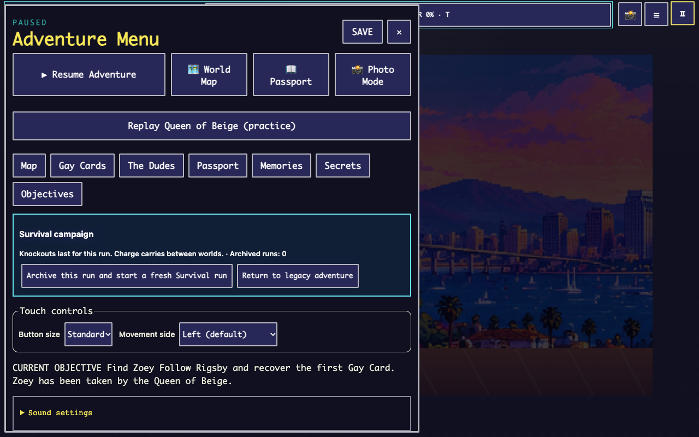
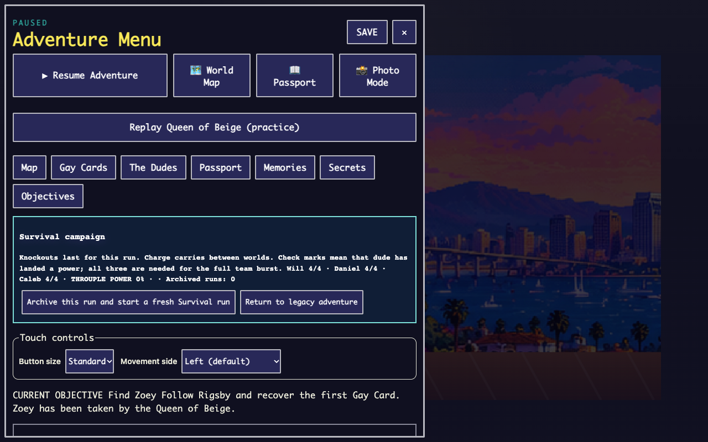
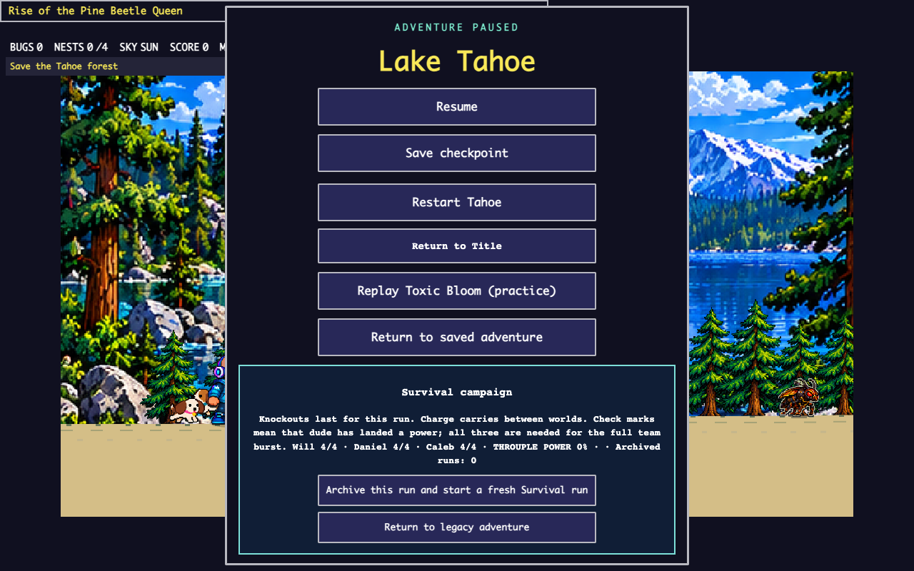

Build 4 — Professional Gameplay & UI/UX Polish
Draft owner review. Not merged or deployed. Based on verified production commit c3aba0f. Approved artwork and the 55-second Origin Story are preserved.
The protected link uses an isolated local test-save namespace and damage protection. Normal and protected play are separate. Review screenshots are browser captures; click an image for its native size. Automated mobile emulation does not establish physical-device verification.
Before / after — native menus
Same viewport and native title/pause actions. Before is the deployed PR14 baseline. The compact menus scroll; the run-summary view shows content after scrolling.
Southern California · title · mobile (740×320)
Southern California · pause · mobile (740×320)
Southern California · run-info · mobile (740×320)
Lake Tahoe · title · mobile (740×320)
Lake Tahoe · pause · mobile (740×320)
Lake Tahoe · run-info · mobile (740×320)
Alaska · title · mobile (740×320)
Alaska · pause · mobile (740×320)
Alaska · run-info · mobile (740×320)
Southern California · title · desktop (1280×800)
Southern California · pause · desktop (1280×800)

Before — Southern California pause
 After — Southern California pause
After — Southern California pause
Southern California · run-info · desktop (1280×800)
Before — Southern California run-info

After — Southern California run-info
Lake Tahoe · title · desktop (1280×800)
Lake Tahoe · pause · desktop (1280×800)
Lake Tahoe · run-info · desktop (1280×800)
 Before — Lake Tahoe run-info
Before — Lake Tahoe run-info

After — Lake Tahoe run-info
Alaska · title · desktop (1280×800)
Alaska · pause · desktop (1280×800)
Alaska · run-info · desktop (1280×800)
Six encounters — desktop and landscape
Controlled arena/camera scenes with isolated prerequisites. They demonstrate actual rendering and HUD hierarchy; normal keyboard completions are documented separately. No forced completion is used to claim natural-route success.
Queen of Beige
Court of Supremes
Toxic Bloom
Pine Beetle Queen
Pipeline Meltdown
Frost Queen
Ended-run recovery
Controlled all-out fixture. The recorded run is archived when a new one begins; separate Legacy saves remain available.
One continuous Survival campaign
146.765 seconds, one run ID, actual keyboard controls and native world travel. Exact health, charge and contribution handoffs pass. All three characters contribute and team power is activated naturally. No teleports, invulnerability or forced completion.
See the draft PR for the exact head commit and GitHub CI result. Physical iPhone Safari/Android Chrome, thermal behavior and human listening checks remain for owner testing. Build 4.5 is not started.